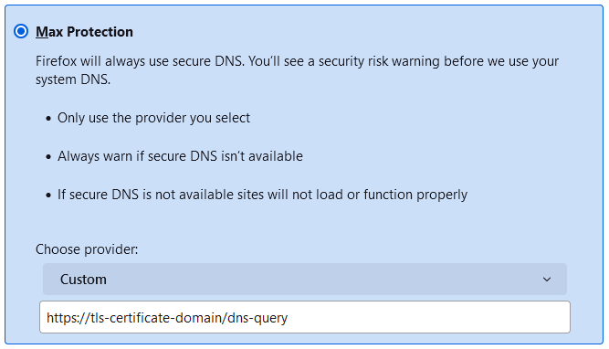

ZenitiumDNS
Dieser Server unterstützt verschlüsseltes DNS (DNS-over-HTTPS), das sich zum Beispiel im Webbrowser Mozilla Firefox nutzen lässt.
Adresse des verschlüsselten DNS-Dienstes
Mit der folgenden Adresse lassen sich Clients für den DNS-over-HTTPS-Dienst einrichten.
Einrichtung in Mozilla Firefox
In Firefox Einstellungen > Datenschutz & Sicherheit öffnen und nach unten zum Abschnitt DNS über HTTPS scrollen. Die Option Maximaler Schutz wählen, im Auswahlfeld Anbieter auswählen den Eintrag Benutzerdefiniert einstellen und die oben angegebene Adresse eintragen.

Hinweis: Das gilt nur für Firefox. Alle anderen Programme auf dem Rechner nutzen weiter den DNS-Server aus den Netzwerkeinstellungen.